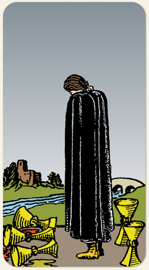

Tentar ser feliz na marra, de qualquer jeito, apego ao passado. O Quatro de Copas olhava para três taças e o Cinco de Copas continua olhando para três taças, mostrando o apego ao tempo de festa.
A tentativa de ser feliz e a frustração por perceber que seus sentimentos não são suficientes para preencher o outro. Rejeição: no Quatro, ele rejeitou uma taça, no Cinco, ele teve todas as suas taças rejeitadas. Rejeitar a cura, não aceitar a solução. Não aceitar a perda e preferir jogar tudo pela janela, se não for da forma como foi idealizado, é melhor não ter, recolher-se, não buscar a felicidade no outro, um chamado para o autoconhecimento, para entender a riqueza da própria companhia. Segue o baile.
Positivo: Introspecção, se recolher, proteger seus sentimentos, experiências de autoconhecimento, perceber padrões de comportamento, não chorar o leite derramado, não oscilar tanto com o mundo externo, autoproteção.
Negativo: Falhar em ser feliz, tristeza, frustração, tristeza profunda, aprisionamento por sentimentos negativos, forças espirituais que fazem danos à autoestima e à autoconfiança, grande concentração de dor, luto, saudade adoecida.
Símbolos: Ponte, Rio, Castelo ao Fundo, Árvores.
Cores: Azul, Amarelo, Vermelho, Verde, Preto.